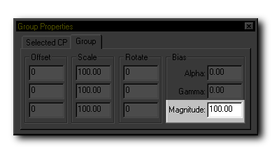
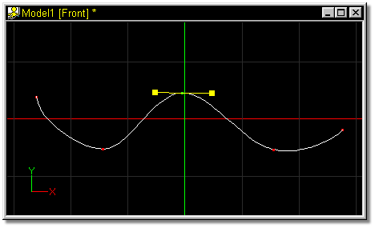

As control points are added, continuous splines are smoothly drawn through
them. The default curve is adequate for many shapes, however, it is sometimes
necessary to adjust the curvature to achieve a specific shape.
To exaggerate the curve of a spline, first select or group it. Exact magnitude
values can be entered on the Properties Panel Group tab.

An alternative way to change the Magnitude of a spline is by clicking the Show
Bias Handles button on the Manipulator Mode Toolbar. When this button is
clicked, the selected control point has yellow handles that appear on it.

Clicking on and dragging these handles with the left mouse button will change
the Magnitude of the selected spline. Moving the mouse right will increase the
magnitude of the curve, while moving the mouse left will decrease it.
The magnitude is a percentage. Initially, it is set to "100" percent. The
value can range from "0" to "1000"'s of percent of the default value. As you
increase or decrease the magnitude, the value will be printed on the Properties
Panel.
Related Topics:
Peak
Smooth